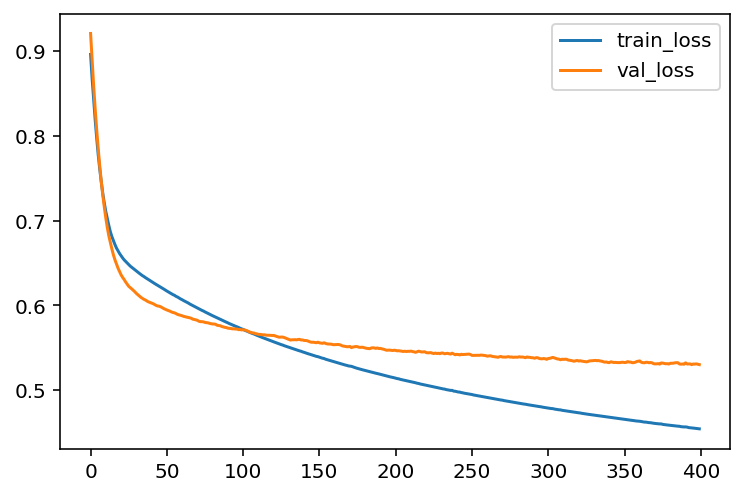
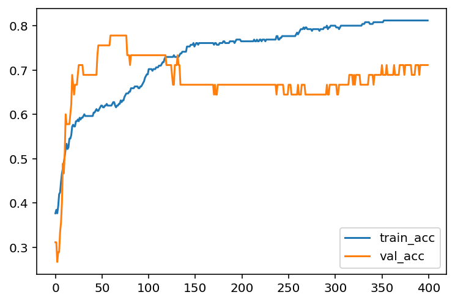
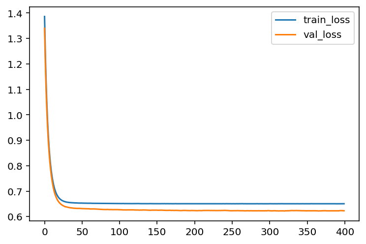
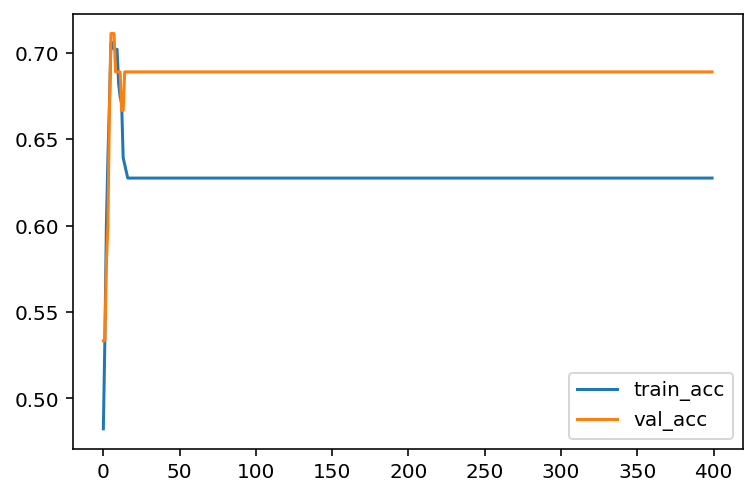

import pandas as pd
import numpy as np
url = 'http://archive.ics.uci.edu/ml/machine-learning-databases/horse-colic/horse-colic.data'
df = pd.read_csv(url, delim_whitespace=True, header=None)
df = df.replace("?", np.NaN)
df.fillna(0, inplace=True)
df.drop(columns=[2, 24, 25, 26, 27], inplace=True)
df[23].replace({1: 1, 2: 0}, inplace=True)
X = df.iloc[:, :-1].to_numpy().astype(float)
y = df[23].to_numpy().astype(int)
from sklearn.model_selection import train_test_split
X_train, X_test, y_train, y_test = train_test_split(X, y, test_size=0.15, random_state=42)Neural network implement of Logistic regression
In the previous sections, we use gradient descent to run the Logistic regression model. We mentioned some important concepts, like epochs, mini-batch, etc.. But we didn’t implement them. In fact sklearn doesn’t provide a very good tool to do all these computations. Hence we turn to another package for this model. We are going to use keras to build a Logistic regression model, and plot the “loss vs epochs” learning curves.
keras is high level Neural network library. It is now in the phase of transition from single backend tensorflow to multi-backend. The old version is installed along with tensorflow. You may use the following command to install it.
pip install tensorflowIf you want to use new version, besides installing tensorflow, you should also install keras-core. Currently we still use tensorflow as the backend. This part may be updated after the stable version is released.
pip install keras-coreYou may follow the instructions for tensforflow and keras for more details.
To use keras to implement logistic regression, we need the following modules: a Sequential model, a Dense layer. The model is organized as follows.
We still use the horse colic dataset as an example.
Note that we need to perform normalization before throwing the data into the model. Here we use the MinMaxScaler() from sklearn package. The normalization layer in keras is a little bit more complicated and doesn’t fit into situation.
from sklearn.preprocessing import MinMaxScaler
mms = MinMaxScaler()
mms.fit(X_train)
X_train = mms.transform(X_train)
X_test = mms.transform(X_test)In the following code, we first set up the model, and then add one Dense layer. This Dense layer means that we would perform a linear transformation to the input, by the formula \(\theta_0+\theta_1x_1+\theta_2x_2+\ldots+\theta_nx_n\). Then there are three arguments:
1: means that there is only output.activation='sigmoid': means that we will apply thesigmoidfunction after the linear transformation.input_dim: means the dimension of the input. Note that this dimension is the dimension of one individual data point. You don’t take the size of the training set into consideration.
After building the basic architectal of the model, we need to speicify a few more arguments. In the model.compile() step, we have to input the optimizer, the loss function (which is the binary_crossentropy in our case) and the metrics to test the performance of the model (which is accuracy in our case).
The optimizer is how the parameters are updated. The best choice in general is adam. The default setting is RMSprop and the optimizer discussed in our lecture is sgd. We will use adam here, since the learning curve it produces looks better (for illustration).
Finally we could train the model. The argument is straightforward.
import keras_core as keras
from keras import models, layers
model = models.Sequential()
model.add(layers.Dense(1, activation='sigmoid', input_dim=X_train.shape[1]))
model.compile(optimizer='adam', loss='binary_crossentropy', metrics=['accuracy'])
hist = model.fit(X_train, y_train, epochs=400, batch_size=30, validation_data=(X_test, y_test))Note that we assign the output of model.fit() to a variable hist. The infomation about this training process is recorded inside. We will extract those information.
loss_train = hist.history['loss']
loss_val = hist.history['val_loss']
acc_train = hist.history['accuracy']
acc_val = hist.history['val_accuracy']We now could plot the learning curve (loss vs epochs) and the learning curve (accuracy vs epochs).
import matplotlib.pyplot as plt
plt.plot(loss_train, label='train_loss')
plt.plot(loss_val, label='val_loss')
plt.legend()
plt.plot(acc_train, label='train_acc')
plt.plot(acc_val, label='val_acc')
plt.legend()
Regularization
To apply regularization, we just need to modify the layer we added to the model. The argument is kernel_regularizer. We would like to set it to be keras.regularizers.L2(alpha), where alpha is the regularization strength.
from keras import models, layers, regularizers
model = models.Sequential()
model.add(layers.Dense(1, activation='sigmoid', input_dim=X_train.shape[1],
kernel_regularizer=regularizers.L2(0.5)))
model.compile(optimizer='sgd', loss='binary_crossentropy', metrics=['accuracy'])
hist = model.fit(X_train, y_train, epochs=400, batch_size=30,
validation_data=(X_test, y_test))loss_train = hist.history['loss']
loss_val = hist.history['val_loss']
acc_train = hist.history['accuracy']
acc_val = hist.history['val_accuracy']
plt.plot(loss_train, label='train_loss')
plt.plot(loss_val, label='val_loss')
plt.legend()
plt.plot(acc_train, label='train_acc')
plt.plot(acc_val, label='val_acc')
plt.legend()
You may compare what we get here with the codes we get before.